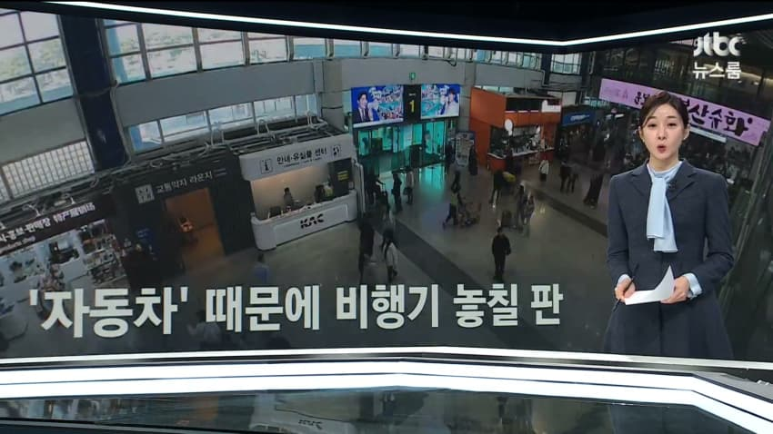
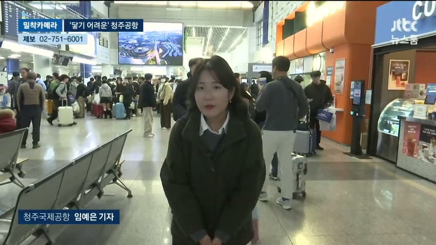
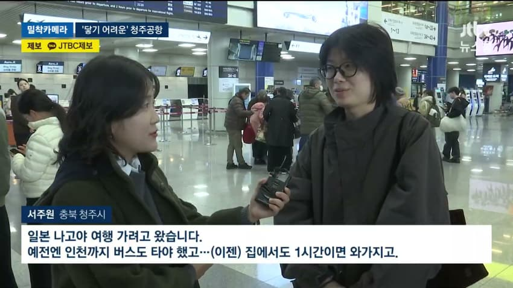
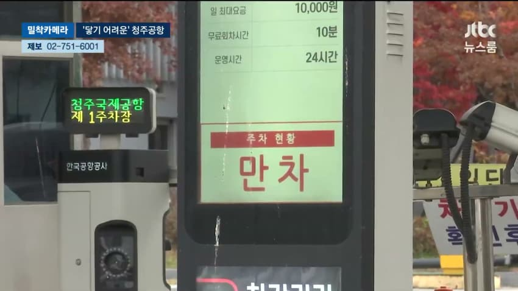
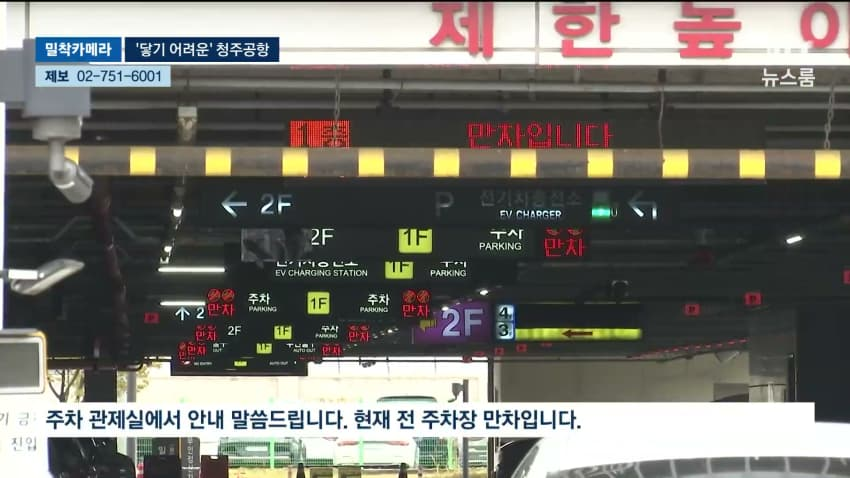
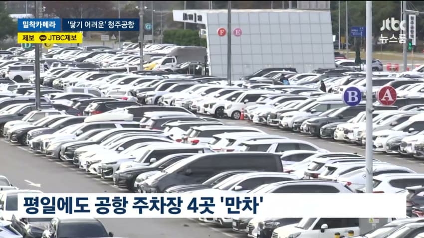
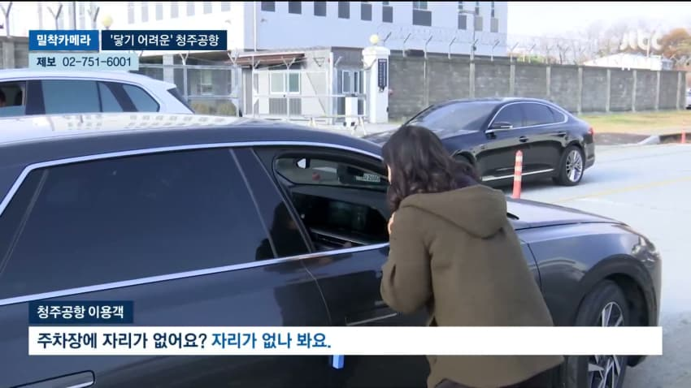
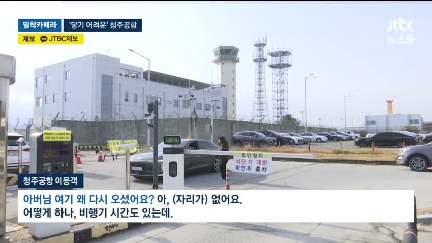
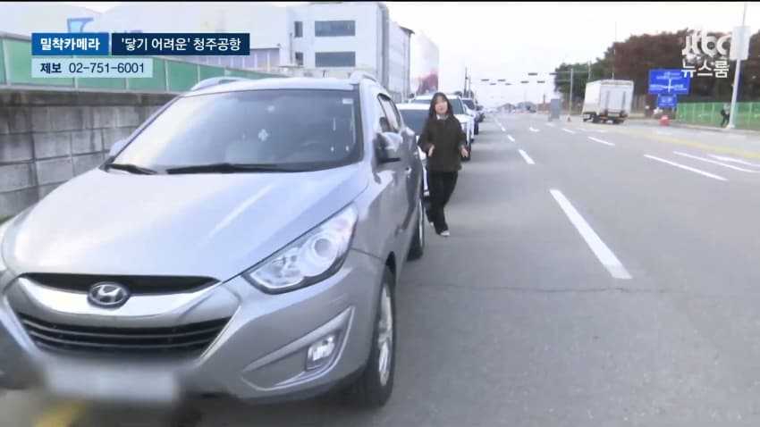
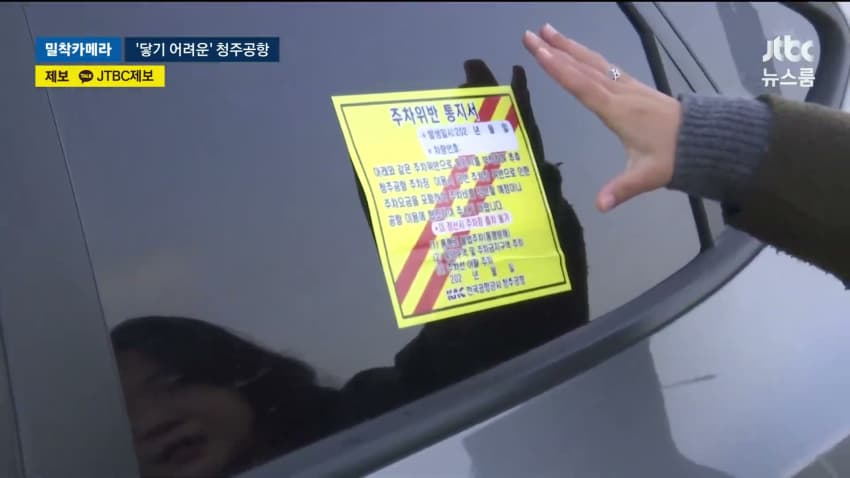
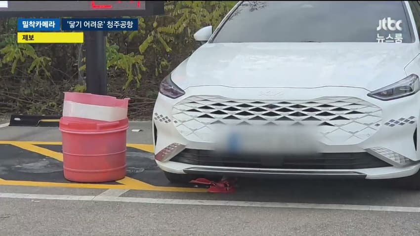
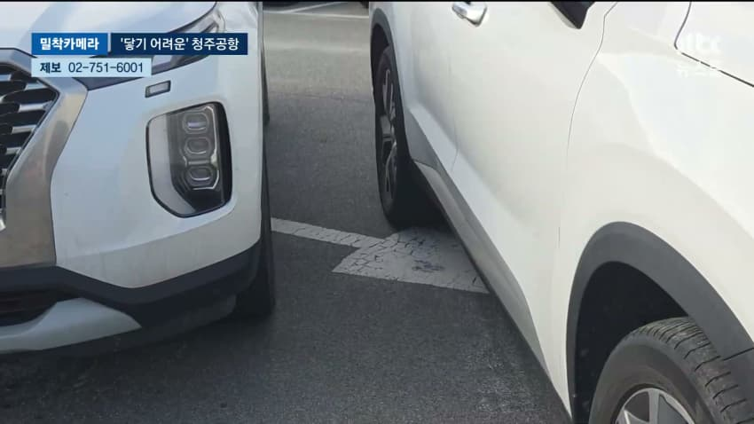
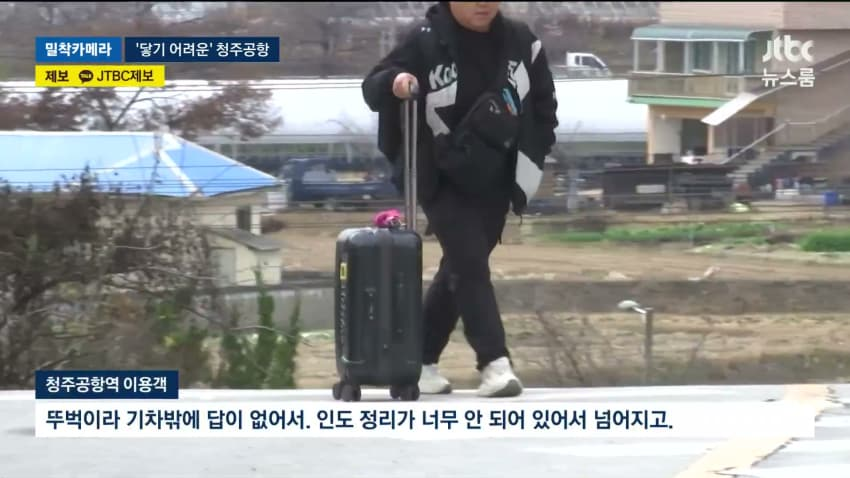
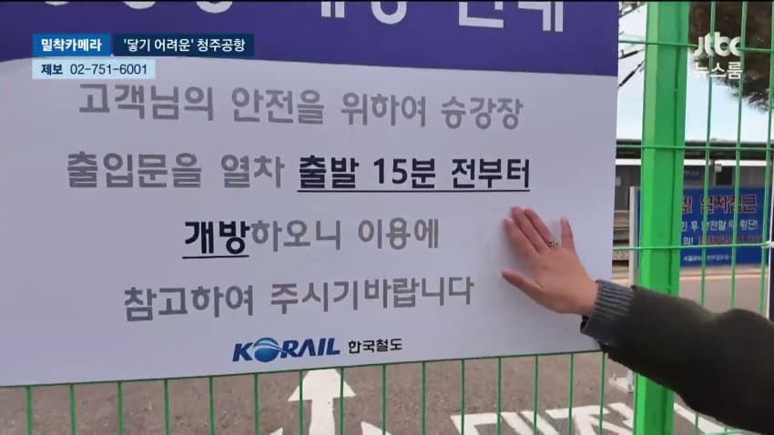
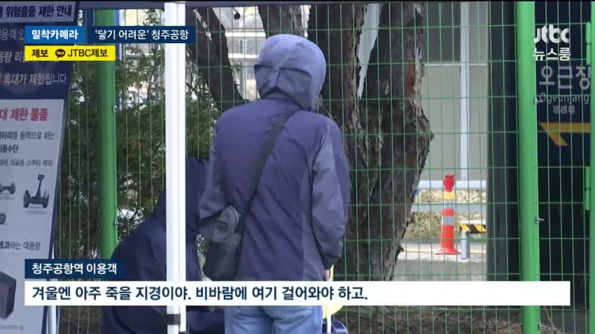
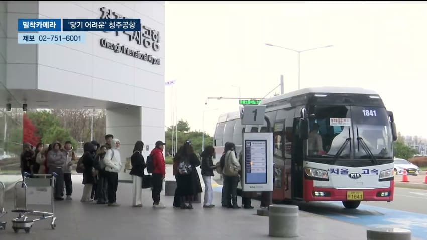
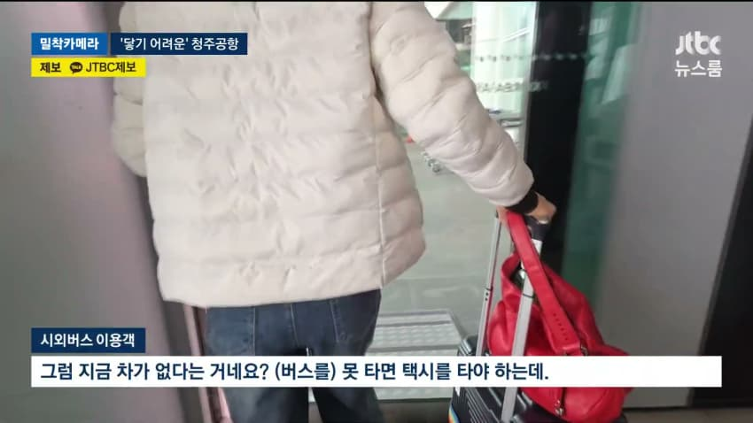
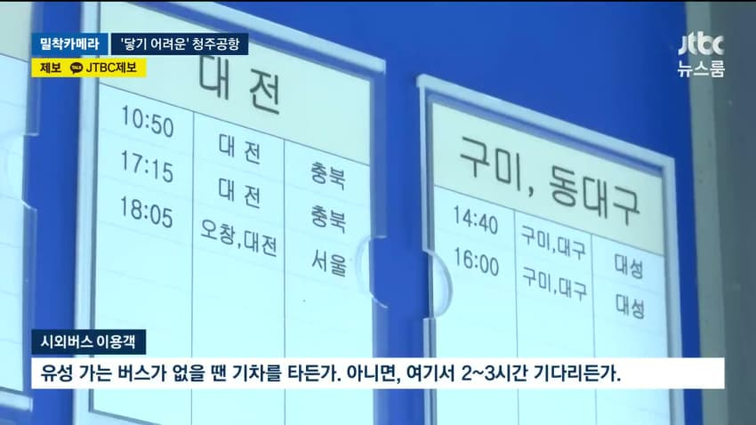
주차장을 2층 혹은 3층으로 만들면
주차면수 충분히 늘릴 수 있을거 같은데?
주차장 시설 투자비는
주차비에서 장기 보전 받을 수 있을거 같고?
댓글
수집 당시 댓글 99개
말랑보추 · 11.21 01:45:08
· 암타황제강시현 · 11.21 01:47:27
봇치쟝 · 11.21 01:46:34
· ㅇㅇ · 11.21 05:53:00
· 봇치쟝 · 11.21 05:53:58
· 봇치쟝 · 11.21 06:01:26
· ㅇㅇ · 11.21 08:11:47
· 봇치쟝 · 11.21 08:16:17
· ㅇㅇ · 11.21 08:17:11
· 봇치쟝 · 11.21 08:23:49
암타황제강시현 · 11.21 01:47:21
· 말랑보추 · 11.21 01:48:17
ㅇㅇ · 11.21 01:49:03
· ㅇㅇ · 11.21 01:50:26
· ㅇㅇ · 11.21 01:50:51
· ㅇㅇ · 11.21 01:53:03
· ㅇㅇ · 11.21 11:50:48
ㅇㅇ · 11.21 01:51:35
ㅇㅇ · 11.21 01:52:38
ㅇㅇ · 11.21 02:08:56
· olbersia · 11.21 02:20:32
· ㅇㅇ · 11.21 02:21:59
ㅇㅇ · 11.21 02:18:36
· olbersia · 11.21 02:21:26
히이잉 · 11.21 02:19:09
ㅇㅇ · 11.21 02:48:19
ㅇㅇ · 11.21 02:53:25
· 2.1배TQQQ · 11.21 02:56:32
· ㅇㅇ · 11.21 03:18:07
· 2.1배TQQQ · 11.21 03:18:46
· ㅇㅇ · 11.21 03:22:36
· ㅇㅇ · 11.21 03:24:23
· ㅇㅇ · 11.21 03:33:02
· ㅇㅇ · 11.21 03:37:57
· ㅇㅇ · 11.21 03:42:58
· ㅇㅇ · 11.21 04:06:51
· ㅇㅇ · 11.21 05:54:14
· ㅇㅇ · 11.21 06:55:20
· ㅇㅇ · 11.21 07:07:06
· ㅇㅇ · 11.21 07:25:09
· ㅇㅇ · 11.21 08:01:44
히이잉 · 11.21 03:09:08
프븨 · 11.21 03:23:22
ㅇㅇ · 11.21 03:24:17
히이잉 · 11.21 03:39:07
ㅇㅇ · 11.21 03:46:54
ㅇㅇ · 11.21 04:00:45
· ㅇㅇ · 11.21 10:55:11
호날두 · 11.21 04:09:55
ㅇㅇ · 11.21 04:19:38
ㅇㅇ · 11.21 04:19:40
ㅇㅇ · 11.21 05:12:17
· ㅇㅇ · 11.21 05:42:16
· ㅇㅇ · 11.21 08:28:24
ㅇㅇ · 11.21 05:21:28
순수비난 · 11.21 05:23:17
ㅇㅇ · 11.21 05:33:41
· ㅇㅇ · 11.21 05:34:13
ㅇㅇ · 11.21 05:41:46
ㅇㅇ · 11.21 05:55:09
ㅇㅇ · 11.21 05:57:53
ㅇㅇ · 11.21 06:00:38
ㅇㅇ · 11.21 06:15:09
ㅇㅇ · 11.21 06:33:27
· ㅇㅇ · 11.21 08:12:05
ㅇㅇ · 11.21 06:33:46
ㅇㅇ · 11.21 06:46:43
ㅇㅇ · 11.21 07:08:14
ㄱㄱ · 11.21 07:08:37
ㅇㅇ · 11.21 07:12:19
인천왕자 · 11.21 07:13:12
2456778 · 11.21 07:14:49
ㅇㅇ · 11.21 07:39:37
2456778 · 11.21 07:44:54
ㅇㅇ · 11.21 07:48:07
· ㅇㅇ · 11.21 08:27:51
· ㅇㅇ · 11.21 08:34:54
ㅇㅇ · 11.21 07:51:45
ㅇㅇ · 11.21 07:55:33
ㅇㅇ · 11.21 08:12:50
ㅇㅇ · 11.21 08:18:35
ㅇㅇ · 11.21 08:22:21
· ㅇㅇ · 11.21 08:25:53
ㅇㅇ · 11.21 08:28:36
ㅇㅇ · 11.21 08:38:46
원또 · 11.21 08:48:48
ㅇㅇ · 11.21 08:48:53
ㅇㅇ · 11.21 08:55:01
ㅇㅇ · 11.21 09:34:03
ㅇㅇ · 11.21 09:46:13
ㅇㅇ · 11.21 09:51:05
모Y샀다가대가리깨진다 · 11.21 09:52:13
ㅇㅇ · 11.21 09:52:17
ㅇㅇ · 11.21 09:53:07
ㅇㅇ · 11.21 10:11:54
ㅇㅇ · 11.21 10:28:13
ㅇㅇ · 11.21 10:54:38
ㅁㅁ · 11.21 11:07:03
ㅇㅇ · 11.21 11:36:00